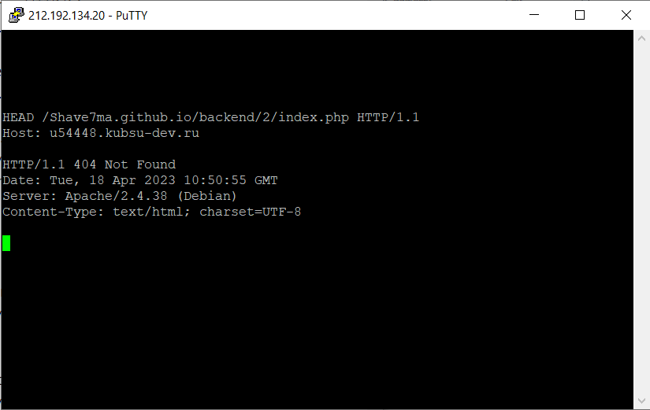

1. Получил главную страницу методом GET в протоколе HTTP 1.0:
2. Получил внутреннюю страницу (index.html из задания 1) методом GET в протоколе HTTP 1.0:
3. Определил размер файла file.tar.gz:
4. Определил медиатип ресурса /image.png:
5. Отправил комментарий на сервер по адресу /index.php:
6. Получил первые 100 байт файла /file.tar.gz:
7. Определил кодировку ресурса /index.php:
